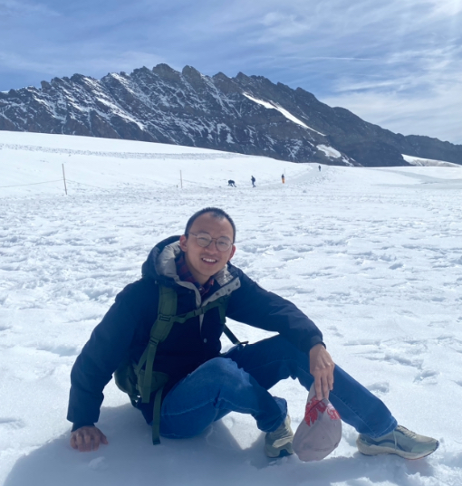

About Me
I am a PhD candidate in Logic and Mathematics at Vrije Universiteit Amsterdam, in the Department of Ethics, Governance and Society. My supervisors are Alessandra Palmigiano and Alexander Kurz.
My research connects category theory, algebra, logic in computer science, and artificial intelligence. I am particularly interested in using category theory to extend algebraic and logical theories from classical equational settings to ordered and quantitative settings, and in exploring their applications in computer science.
I have submitted my doctoral thesis, Quantale-Enriched Algebras, and expect to graduate by the end of January 2027.
Visit my research page for an overview of my work, including a Lean 4 formalization project, or browse my publications.
Education
-
Sep 2022 — Present
PhD Candidate in Logic and Mathematics Vrije Universiteit Amsterdam, The Netherlands.
-
Sep 2019 — Jun 2022
M.A. in Philosophy Shandong University, China.
-
Sep 2015 — Jun 2019
B.A. in Law Qufu Normal University, China.
